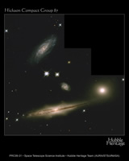
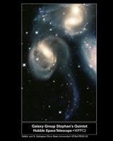
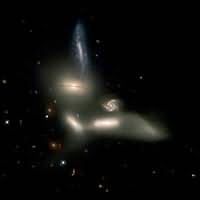
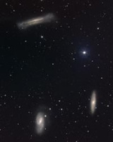

Galaxy groups contain between 2 and 100 galaxies and have been subdivided into two main types:
- loose groups (far right-hand image, below) in which galaxies are separated by distances many times larger than the size of the galaxies
- compact groups (three images on the left, below) in which galaxies are separated by distances not much larger than the size of the galaxies.
A catalogue of the nearest compact groups was compiled by Paul Hickson in 1982. For this reason, the most famous (nearest, brightest) compact groups are known as Hickson compact groups.
At one time it was thought that these groups were merely chance projections on the sky. However, recent research has shown that most are indeed gravitationally bound.
|
 |

Hickson Compact Group 92 (Stephan’s Quintet).
Credit: NASA Goddard Space Flight Center (NASA-GSFC) |

Hickson Compact Group 79 (Seyfert’s Sextet)
Credit: NASA Goddard Space Flight Center (NASA-GSFC) |
| For comparison, the Leo group is a loose group of galaxies. Note the large separations of galaxies compared to the three Hickson Compact Groups. |

Leo group
Credit: NOAO/AURA/NSF |
The velocities measured for galaxies in compact groups are quite low (~200 km/s), making these environments highly conducive to interactions and mergers between galaxies. However, this makes the formation of compact groups something of a mystery, as the close proximity of the galaxies means that they should merge into a single galaxy in a short time, leaving only a fossil group. This would mean that compact groups are a shorted-lived phase of group evolution, and we would expect them to be extremely rare. Instead, we find a significant number of compact groups in the nearby Universe, with well over 100 identified.
Two ideas proposed to explain the high abundance of compact groups are:
- perhaps this is the final evolutionary phase of ALL galaxy groups. It is then possible that as one compact group merges to form a fossil group galaxy, somewhere another group is entering the compact phase. This would maintain the overall number of compact groups observed.
- perhaps compact groups are more stable against mergers than we believe. This could result from their being dominated by a single, large halo of dark matter.
While it is not yet clear why we observe so many compact groups, research continues to try to unravel the mystery.